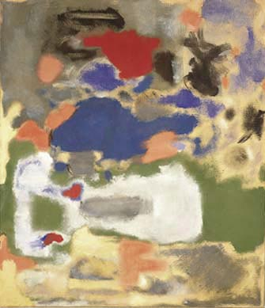
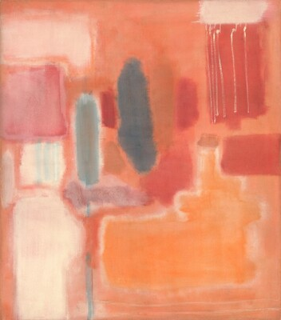
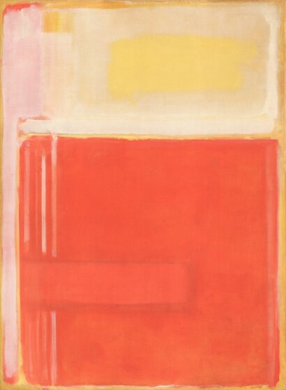

Mark Rothko, Untitled, 1948, Collection of Kate Rothko PrizelMark Rothko, Untitled [Multiform], 1948, Collection of Kate Rothko Prize

Mark Rothko, No. 9, 1948, oil and mixed media on canvas, Gift of The Mark Rothko Foundation, Inc., 1986.43.143

Mark Rothko, No. 8, 1949, oil and mixed media on canvas, Gift of The Mark Rothko Foundation, Inc., 1986.43.147